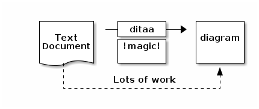

安裝
-
同其他 plugins 的安裝方式，用
asciidoc --filter install安裝。$ asciidoc --filter install ditaa-filter-<version>.zip $ asciidoc --filter list $ASCIIDOC_DIR/filters/code $ASCIIDOC_DIR/filters/music $ASCIIDOC_DIR/filters/source ... ~/.asciidoc/filters/ditaa
接下來用一個簡單的圖形做測試：
["ditaa"]
---------------------------------------------------------------------
+--------+ +-------+ +-------+
| | --+ ditaa +--> | |
| Text | +-------+ |diagram|
|Document| |!magic!| | |
| {d}| | | | |
+---+----+ +-------+ +-------+
: ^
| Lots of work |
+-------------------------+
---------------------------------------------------------------------如果安裝成功的話，你應該要看到下面的圖形：

延伸閱讀
參考資料
其他文件
-
Some extra features for the AsciiDoc Slidy backend - 內含 one-source 跟 many output formats 的概念圖